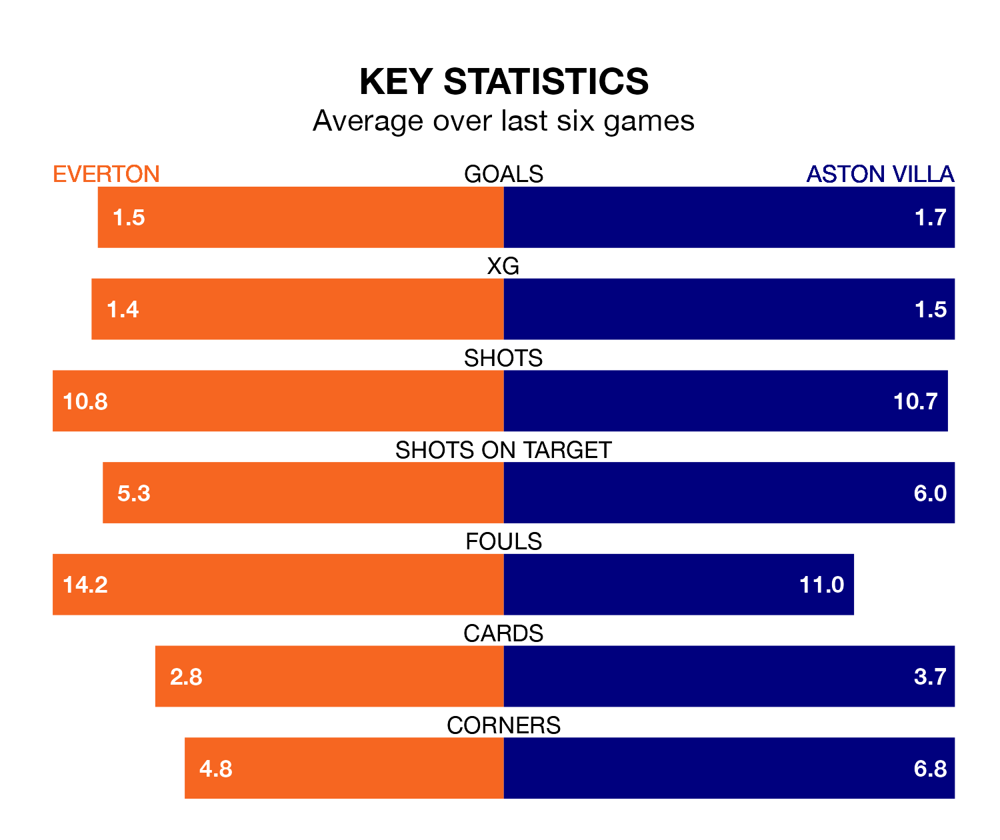

Everton welcome Aston Villa to Goodison Park on early Sunday looking to pick up points to end their three-game losing streak.
Everton's struggles have left them with nine points from their last six Premier League matches, while their opponents have earned 13 from a possible 18.
With 43 goals in 20 games so far this season, Villa are the league's joint-second-highest scorers with 2.1 goals per game. And they are conceding fewer than average, letting in 27 goals at a rate of 1.4 per game.
Everton, meanwhile, are below average scorers, with 1.2 goals per game, compared to a league average of 1.6. They have conceded 1.4 goals per game.
In Jordan Pickford, the Toffees can rely on one of the league's safest pair of hands. He has kept six clean sheets in his 20 appearances this season, and no 'keeper has prevented the opposition scoring more often in the Premier League.
In the Villa's net, Emiliano Martínez has four clean sheets in 19 games.
The visitors are second in the table after 20 games, of which they have won 13 and drawn three, earning 42 points.
The home side are 10 places behind Villa in 12th, with eight wins and two draws putting them on 26 points.
In the last 10 years, Everton and Villa have played each other on 15 occasions. Everton won five of them, Villa eight, and they drew twice.
On average, the Toffees scored 1.3 goals and the Villa 1.5 in those matches.
Their last meeting was on September 27, when Everton won 2-1 away.
Everton's last match was on December 30, a 3-0 loss against Wolverhampton Wanderers.
Villa beat Burnley 3-2 last time out, also on December 30, with Douglas Luiz, Leon Bailey and Moussa Diaby on the scoresheet.
Updated: 10:36, 03/01/24